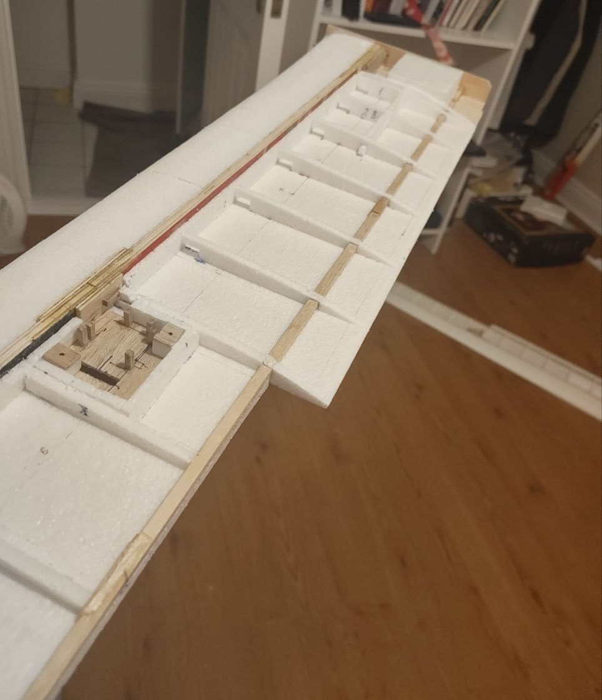

Project 02 · RC aircraft
2 m glider
TODO: one-line summary
| Status | Finished |
|---|---|
| Dates | June 2025 to August 2026 |
| My role | Personal project; I did everything |
| Wingspan | 2 m |
| Mass | 1.2 kg TODO: measured or designed? |

Goal and constraints
TODO: goal and requirements
Design
- Two-part wing
- Hand-made airfoil
- T-tail
TODO: why you made these decisions



Build
| Materials | Balsa, foam, plywood |
|---|---|
| Processes | Scalpel cutting and gluing |
| Tools and software | TODO |
Specs
| Wingspan | 2 m |
|---|---|
| Airfoil | Hand-made |
| Mass | 1.2 kg |
| Wing area | TODO: not yet known |
| Wing loading | TODO |
| Controls and power | Ailerons and motor TODO: other control surfaces, if any |
Flight results
No flight results to report.
Problems and fixes
TODO
What I would change
TODO